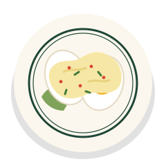
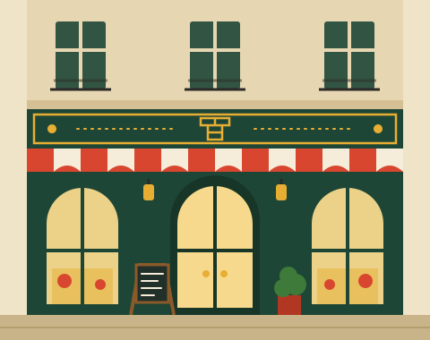

Bouillon parisien · depuis 1906 · Paris 10e
Une bonne assiette, de midi à minuit.
Œuf mayo à 3 €, bourguignon à 13 €, pain et carafe d’eau à volonté. On ne réserve pas : on pousse la porte, on vous trouve une place, et le serveur fait l’addition au crayon sur la nappe.
- Entrées3 à 8 €
- Plats9 à 15 €
- Desserts4 à 7 €
Aujourd’hui à l’ardoise
Blanquette, pot-au-feu, bourguignon : un plat mijoté chaque jour
dès 11,50 €
Le principe du bouillon
Sept cases jusqu’au ciel.
Depuis 1906, les règles de la maison n’ont presque pas bougé. On les a dessinées comme la marelle du trottoir d’en face, celle que les enfants de l’école du boulevard refont à la craie chaque printemps.
- 1
Pas de réservation
On entre, on attend rarement plus d’un quart d’heure, même un samedi soir.
- 2
Service continu
De midi à minuit, sans pause. Un œuf mayo à 16 h ? Avec plaisir.
- 3
Des prix ronds
Entrées de 3 à 8 €, plats de 9 à 15 €. Service compris, pas de surprise.
- 4
Tout fait ici
Fonds, sauces, terrines et crèmes caramel préparés chaque matin en cuisine.
- 5
On vous place vite
Seul, à deux ou à six : grandes tables, parfois partagées avec les voisins.
- 6
Le vin au verre
Dès 3,50 € le verre, en pichet aussi. La carafe d’eau, elle, est offerte.
- 7
L’addition sur la nappe
Le serveur fait le compte au crayon, sur le papier de la table. Comme avant.
- Ciel
Le café à 1,50 €
Et le petit carré de chocolat qui va avec.
Tous les jours dès midi
Le plat du jour, jusqu’à épuisement.
Chaque matin, Mireille, notre cheffe, lance une grande marmite. Un plat mijoté par jour de la semaine, servi tant qu’il en reste. Les habitués le savent : le jeudi, le pot-au-feu part avant 21 h.
Le plat du jour est servi avec du pain de la boulangerie du coin et peut se commander en demi-portion (−3 €) pour les petites faims.
Toute la cartePlat du jour
- LundiHachis parmentier, salade verte11,50 €
- MardiBlanquette de veau à l’ancienne, riz pilaf13,50 €
- MercrediPetit salé aux lentilles vertes12 €
- JeudiPot-au-feu, os à moelle, gros sel14 €
- VendrediBrandade de morue gratinée12,50 €
- SamediBœuf bourguignon, coquillettes13 €
- DimanchePoulet rôti, purée maison12,50 €
Prix nets · service compris
Les classiques
Ceux qu’on ne retirera jamais de la carte.
-

Entrée
Œuf mayonnaise
Œufs bio cuits 9 minutes, mayonnaise montée à la main, ciboulette.
3 €
-
Entrée · végétarien
Poireaux vinaigrette
Poireaux fondants, vinaigrette à la moutarde, noisettes torréfiées.
4,50 €
-
Plat
Bœuf bourguignon
Joue de bœuf mijotée sept heures au vin rouge, carottes, coquillettes.
13 €
-
Dessert
Profiteroles
Trois choux, glace vanille, chocolat chaud versé à table.
6,50 €

La maison
Une salle de 1906, des prix d’aujourd’hui.
En 1906, Auguste Ferrand, boucher du faubourg, ouvre un « bouillon » pour nourrir les cheminots et les ouvrières des ateliers voisins : une soupe, un morceau de bœuf, un verre de vin. Plus d’un siècle plus tard, on a gardé les miroirs, les porte-manteaux en laiton, le carrelage en mosaïque… et l’idée.
Depuis 2023, Odile Marchetti en salle et Mireille Joubert en cuisine tiennent la maison avec une équipe de vingt-deux personnes. Leur règle : que tout le monde puisse s’asseoir ici, étudiants comme habitués, sans regarder la note.
- Couverts
- 180
- Plats par jour
- 900
- Le café
- 1,50 €
Ce qu’on entend en salle
-
« Je viens seul presque tous les midis. Ils me trouvent toujours une place au comptoir, et le céleri rémoulade est meilleur que celui de ma grand-mère. »
Henri, retraité du quartier
-
« On était quatorze pour un anniversaire, on a payé 29 € chacun avec le vin et le café. Personne n’y croyait. »
Leïla, pour ses 30 ans
-
« Sortie du théâtre à 23 h, une soupe à l’oignon gratinée et une mousse au chocolat. Paris comme on l’aime. »
Thomas et Inès, en voisins

Vous êtes dix ou plus ? On vous dresse une tablée.
Pour les groupes, et seulement pour eux, on prend les réservations : anniversaires, pots de départ, fins de tournage, repas de classe. Menus dès 22 € par personne, mezzanine privatisable jusqu’à 60 couverts.
Organiser un repas de groupeNous trouver
3 boulevard du Prototype
75010 Paris · à deux minutes du métro Maquette (lignes 4 et 7)
- Salle
- Tous les jours, 12 h – minuit
- Cuisine
- En continu jusqu’à 23 h 30
- Plat du jour
- Dès midi, jusqu’à épuisement
- Réservation
- Groupes de 10 personnes et plus